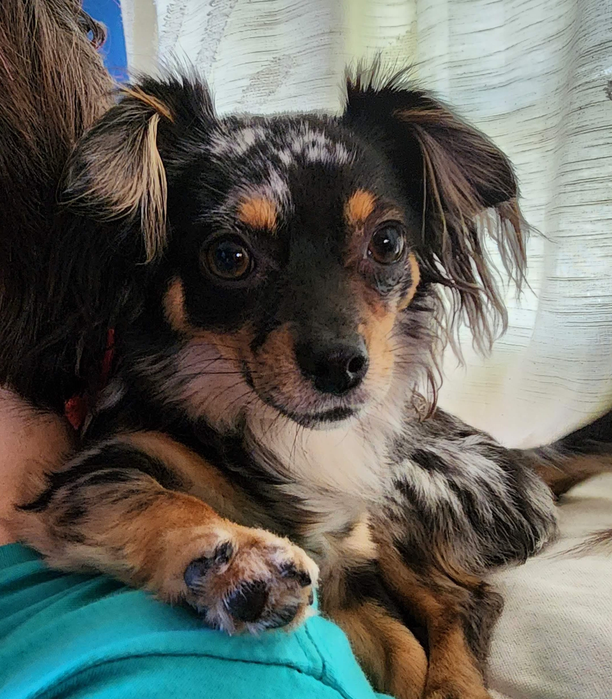

Tae McBride's Portfolio
Yayeye!! This is my first webpage.
This is where I will store all my finsihed projects for ease of access.
This website, of course, is the first addition!
Here are my socials:
Skills:
Personal:
- Written and verbal Communication
- Problem solving
- Analytical skills
- Time management
- Customer service
- Leadership
- Teamwork
Professional:
- Functional, regression, usability and acceptance testing
- Manual testing
- Defect tracking
- Scrum
- Test planning
- Test case creation, and upkeep
Software and Operating Systems:
- Windows, and Mac
- iOS, and Android
- Google Sheets, Doc, Meet, and Drive
- Jira, Github, TestRail, Visual Studio
This is my family:
- Solar
- She's my parrot dog that sleeps on my shoulders
